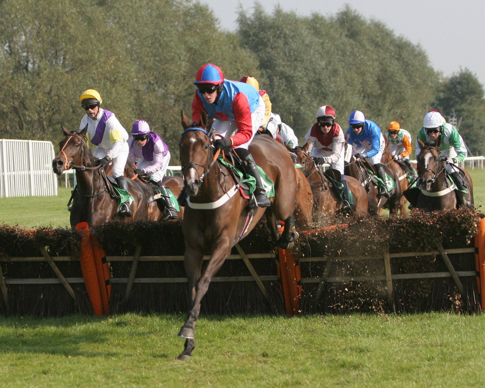

Talk Of New York abre su cuenta en el Grupo I con el Queen Elizabeth II Stakes de Ascot
El representante de Godolphin, preparado por Charlie Appleby y montado por William Buick, ganó el Queen Elizabeth II Stakes de Ascot por un cuerpo y cuarto sobre Ten Bob Tony.

La carrera la abrieron las liebres. Needle Match y Hawk Mountain tiraron del lote por el centro de la pista, mientras el resto se iba arrimando a la cuerda. Buick llevó a Talk Of New York tapado en mitad del grupo, bien relajado, hasta que lo sacó de detrás de los rivales para ver el camino libre y le pidió el cambio de ritmo.
La respuesta fue inmediata. Con la cuerda a su favor, Talk Of New York abrió cuerpos sobre el resto. Ten Bob Tony, que había corrido siempre cerca del ganador, intentó seguirle por el mismo hueco, pero nunca llegó a amenazarle. Por detrás, el francés Rayif, que se resistió a entrar en el partidor y llegó a la salida sin apenas apoyo en las apuestas, remató desde muy lejos para ser tercero a un cuello del segundo.
El favorito, Gstaad, salió a 7/4 y se fue hacia atrás pese a los esfuerzos de su jockey. Talk Of New York cotizaba a 3/1.
La sorpresa estuvo en la cuarta plaza. Needle Match, una de las dos liebres, se rehízo en la recta y se quedó a un cuello del tercer puesto. Había salido a 150/1.
El triunfo culmina un camino diseñado por Appleby. Tras ser tercero en el St James's Palace Stakes de Royal Ascot, el preparador bajó de categoría a Talk Of New York en sus dos siguientes salidas, y el caballo ganó en Newmarket en su última actuación antes de Ascot.
Appleby explicó así la evolución: «Simplemente le ha llevado tiempo madurar y adquirir cabeza de caballo de carreras, pero creo que eso ya lo vimos en Newmarket, en los preliminares, tanto como en cualquier otra cosa».
Por Martín Larrañeta